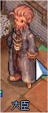
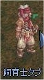
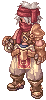
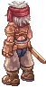
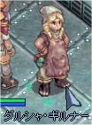

画像にリンクがはってあるものは、クリックすると別窓で大きめサイズが表示されます。
[大臣]
所在地；プロンテラ城内(76,165) |
|  |
[隊長]
所在地；ミッドガルド連合軍駐屯地（212,237） |
   |
[タオ]
所在地；モロク秘密の酒場内奥 |
   |
[タブ]
所在地；連合軍駐屯地(143,306) |
|  |
[ダルシャ・ギルナー]
所在地；アインブロックホテルの隣の建物内 |
  |
[小さな妖精]
所在地；スプレンディッドフィールド（spl_fild02:34,223） |
   |
[チェン ウォンソク]
所在地；コンロン中央やや左下 |
   |
[地下水路管理兵]
所在地；プロンテラフィールド05(prt_fild05) |
   |
[ちびモリスン]
所在地；プロンテラ宿屋内(207,191)付近 |
   |
[チャビバタン]
所在地；ウンバラ(145,216) |
   |
[同盟管理官]
所在地；プロンテラ城内(121,51) |
   |
[同盟管理官]
所在地；ラヘル・セスルムニル神殿中央(119,113) |
   |
[ドノ－]
所在地；リヒタルゼン7時方向(lighthalzen:88,80) |
   |
[トロック]
所在地；飛行船シュバルツバルド国内線室内 |
back
(c) Gravity Co., Ltd. & Lee MyoungJin(studio DTDS). All rights reserved.
(c) GungHo Online Entertainment, Inc. All Rights Reserved.
当コンテンツの再利用（再転載・配布など）は、禁止しています。